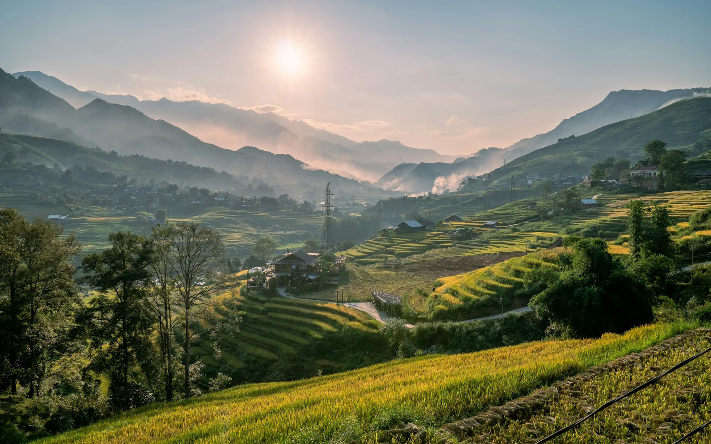
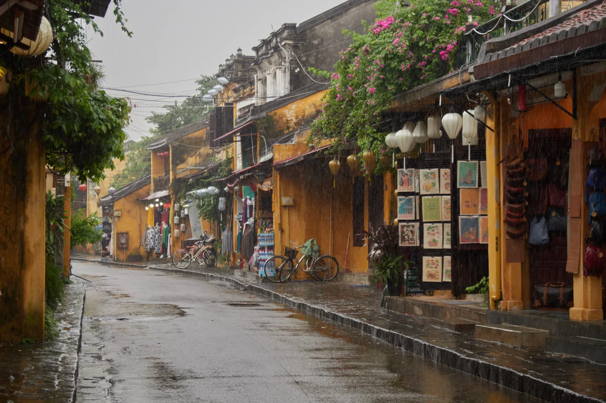
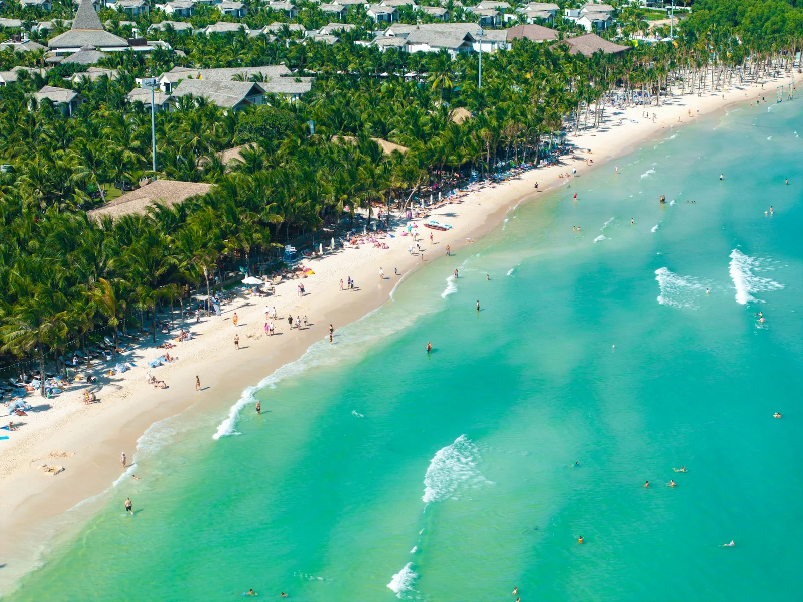

For a first trip covering Hanoi, Hoi An and Ho Chi Minh City, March to April is one of the most practical windows for Vietnam in 2027. But the best time to visit Vietnam depends on your route: the north rewards autumn travellers, central Vietnam has its own rainy season, and the south offers sunnier beach weather during its dry months. Use this month-by-month guide to choose the dates that fit your kind of holiday, not just the weather headline.
Vietnam stretches across several climate zones. That is why an excellent month in Hanoi can be inconvenient in Hoi An, and the reverse is also true. The Vietnam National Authority of Tourism's weather guide describes March to May as a particularly good broad window for travelling across the country, while still stressing the strong regional differences.
| Where you are going | Months worth considering | What to expect |
|---|---|---|
| Hanoi, Ninh Binh and Ha Long Bay | March–April; September–November | Generally more comfortable sightseeing; autumn often brings clearer, cooler days. |
| Sa Pa and the northern mountains | April–May; September–October | Spring walking conditions or seasonal rice-field scenery; highland weather changes quickly. |
| Hue, Da Nang and Hoi An | February–April; May–August for hot beach days | A comparatively sunnier stretch, although peak summer can be very hot. |
| Ho Chi Minh City and the Mekong Delta | December–April | The drier part of the year, usually with hot afternoons. |
| Phu Quoc island | December–March | A popular choice for beach-focused holidays; sea conditions still require checking. |
This is a broad planning calendar based on typical seasons, not a forecast for individual days in 2027. Typhoons, unusually heavy rainfall and changing temperatures can alter conditions. The official regional climate guide is a useful companion when choosing experiences.
| Month | Strongest travel ideas | Plan around |
|---|---|---|
| January | Ho Chi Minh City, Mekong Delta and Phu Quoc | Cooler northern weather; lingering rain in parts of central Vietnam. |
| February | Southern beaches; improving conditions in Hoi An | Tet closures and heavy domestic travel around 6 February 2027. |
| March | Multi-region highlights; Hue, Da Nang and Hoi An | Variable mist or drizzle on northern mountain and bay days. |
| April | Hanoi, Ninh Binh and central coast combinations | Increasing heat, especially late in the month. |
| May | Da Nang beaches, Hoi An mornings, mountain scenery | Higher temperatures; southern showers begin to become more common. |
| June | Central-coast beach time, with flexible indoor breaks | Hot, humid northern cities; seasonal thunderstorms. |
| July | Central Vietnam's coastline when forecasts allow | Strong heat and heightened storm disruption risk in some regions. |
| August | Beach or cultural trips with a weather-flexible schedule | Monsoon rain and storm-related transport changes. |
| September | Northern cities and highland landscapes | Central Vietnam's wetter period begins; verify field-harvest timing. |
| October | Hanoi, Ha Long Bay and selected mountain routes | Flood and storm risk around Hoi An and Hue. |
| November | Northern heritage routes; southern city breaks | Central coast can still experience heavy rain. |
| December | Southern escapes and Phu Quoc; atmospheric Hanoi | Cold, misty northern mornings; festive-season demand. |
These windows are not rigid. A rainy afternoon rarely means a whole holiday is lost, but flood warnings, marine conditions and mountain-road safety should always take priority over a fixed sightseeing checklist.
For Hanoi, September to November is a favourite period for walking through the Old Quarter, enjoying lakeside cafés and exploring outdoor heritage sites without the most intense summer humidity. March and April can also be pleasant, although spring may bring cloud, drizzle or changing temperatures.
Ha Long Bay and Lan Ha Bay usually offer stronger prospects for comfortable cruising around April–June and September–November. Winter voyages can be wonderfully atmospheric, but mist may hide long views of the limestone islands. Summer storms sometimes disrupt boats or lead to cruise cancellations.
In Sa Pa, April–May can suit travellers interested in hiking and fresh mountain landscapes. September and early October are often discussed for rice-terrace scenery, but the exact planting and harvest calendar differs by valley, elevation and year. Do not expect every terraced field to be golden on the same date.

Central Vietnam does not follow the same seasonal pattern as Hanoi or Ho Chi Minh City. For Hoi An and Da Nang, February–April is a particularly appealing mix for strolling, cycling and heritage sightseeing, while May–August brings hotter conditions that can work for travellers who prioritise the beach and schedule activities early or late in the day.
Hue can also be attractive in the warmer, generally drier months from March to August. For visitors exploring the Imperial Citadel and royal tombs, sunshine is welcome, but shade, hydration and slower midday pacing matter as temperatures rise.
From roughly September to January, Hoi An may experience extended wet spells, storms and occasional flooding. Hue's wet season is also pronounced. This does not mean travel is impossible, but it does mean that non-refundable outdoor activities and tightly timed transfers deserve extra care. Vietnam Tourism specifically flags the late rainy season in central Vietnam. Read the official regional climate advice.

Ho Chi Minh City and the Mekong Delta are warm throughout the year. December–April is generally their drier stretch, making it convenient for walking tours, river excursions and city-to-countryside combinations. From May–November, afternoon downpours become more frequent; a flexible timetable, waterproof cover for valuables and a sheltered café stop can make rainy-season days perfectly enjoyable.
For a Phu Quoc beach holiday, December–March is a sensible first choice, especially when you want time on the sand or short boat outings. Conditions outside that window vary, and sea state—not the month alone—determines whether particular boat trips are safe.

If your trip includes the Mekong Delta, ask your local guide to plan market visits and river activities around actual local operating hours and river conditions rather than assuming every tour runs identically all year.
Tet, Vietnam's Lunar New Year, falls on Saturday 6 February 2027. It is a special time to witness family traditions, festive flowers and the atmosphere of a major national holiday. It is also one of the most logistically demanding periods for travelling.
The Vietnamese Government's published 2027 holiday guidance lists the public-sector Tet break as 4–10 February 2027. Individual hotels, restaurants, attractions and private companies may follow different schedules. Domestic transport demand often rises around the holiday.
For itineraries in late January or early February, check the actual 2027 operating calendar before treating any stop as confirmed. Do not assume that a business which was open during a previous Tet will follow the same timetable in 2027.
Consider March or early April for a balanced multi-region route: Hanoi and Ninh Binh, a bay cruise, Hue and Hoi An, then Ho Chi Minh City and the Mekong Delta. Allow around two weeks if possible, and travel at a pace that leaves space for weather and transfers.
Choose your coastline before choosing your dates. Da Nang and Hoi An are more naturally aligned with spring and summer sunshine, while Phu Quoc is often most attractive in the southern dry season. Do not assume every beach shares the same optimum months.
Prioritise spring or early autumn in the northern highlands, check the specific trail conditions, and remember that harvest timing is locally variable. Good walking shoes, a warm layer and a flexible route are more useful than packing only for tropical heat.
Shoulder months can offer a rewarding compromise, but avoid choosing solely by price or an online "rainy season" label. A thoughtfully planned city-food-culture itinerary may work well in wetter months when river and mountain trips need more flexibility.
For primary planning references, consult Vietnam Tourism's regional climate guide, its regional destination weather notes and regional weather reference. Sources and typical seasonal patterns were reviewed on 3 November 2026; this article is a travel-planning guide, not a 2027 day-by-day forecast.
March is a useful starting point for a north-to-south itinerary because it often balances central Vietnam's improving weather and the south's dry season with manageable conditions in the north. April is also attractive, though the south and centre can grow hotter. No month offers guaranteed ideal weather across every region.
October can be excellent for Hanoi, Ha Long Bay and parts of the northern highlands. However, it coincides with a wetter, storm-prone period in much of central Vietnam, including Hoi An and Hue. Build the route around the north or keep central stops flexible.
Not necessarily. In southern Vietnam, rain often arrives in shorter afternoon downpours; in central Vietnam, some periods bring persistent heavy rain and flooding. The local region and current forecast matter far more than the phrase "rainy season" alone.
No. Tet can be a memorable cultural experience if you plan around closures and busy transport. The first day is 6 February 2027, and the public-sector holiday is scheduled for 4–10 February. Confirm each service's operating days and book essential transport well ahead.
Not sure whether to choose a northern autumn trip, a spring journey across the country or a sunny southern escape? Tell the Seven Travel team what you love, your preferred travel month and your ideal pace. We can help shape a route that works with Vietnam's regional seasons rather than against them.
Explore Seven Travel